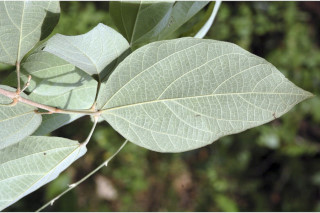
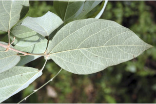

Trees up to 5 m tall.
5 ಮೀ. ಎತ್ತರದವರೆಗೆ ಬೆಳೆಯುವ ಮರಗಳು.
5 മീറ്റര് വരെ ഉയരമുള്ള മരങ്ങള്.
மரங்கள் 5 மீ. உயரம் வரை வளரக்கூடியது
Bark greyish, lenticellate.
ಕಿರುಕೊಂಬೆಗಳು ದುಂಡಾಕಾರದಲ್ಲಿದ್ದು ನಕ್ಷತ್ರ-ರೋಮಸಹಿತವಾಗಿರುತ್ತವೆ .
ശ്വസനരന്ധ്രങ്ങളുള്ള, ചാര നിറത്തിലുള്ള പുറംതൊലി.
மரத்தின் பட்டை சாம்பல் நிறமானது, லெண்டிசெல் உடையது.
Branchlets terete, stellately tomentose.
ಎಲೆಗಳು ಸರಳವಾಗಿದ್ದು ಅಭಿಮುಖದಿಂದ ಉಪಅಭಿಮುಖ ಹಾಗೂ– ಕತ್ತರಿಯಾಕಾರದ ಜೋಡನಾ ವ್ಯವಸ್ಥೆಯಲ್ಲಿರುತ್ತವೆ; ಕಾವಿನೆಲೆಗಳು ಉದುರಿಹೋಗುತ್ತವೆ; ತೊಟ್ಟುಗಳು 1 ರಿಂದ 5 ಸೆಂ.ಮೀ.ಉದ್ದವಿದ್ದು ಅಡ್ಡ ಸೀಳಿದಾಗ ಸಪಾಟ ಪೀನ ಮಧ್ಯದ ಆಕಾರದಲ್ಲಿರುತ್ತವೆ ಮತ್ತು ಎರಡೂ ತುದಿಯಲ್ಲಿ ಊದಿಕೊಂಡಿರುತ್ತವೆ ಹಾಗೂ ನಕ್ಷತ್ರ-ರೋಮಸಹಿತವಾಗಿರುತ್ತವೆ; ಪತ್ರಗಳು 10.5 -23 X 5.3 – 13 ಸೆಂ. ಮೀ. ಗಾತ್ರದಲ್ಲಿದ್ದು,ಅಂಡಾಕಾರದಲ್ಲಿರುತ್ತವೆ;ಪತ್ರಗಳ ತುದಿ ಚೂಪಾಗಿರುವುದರಿಂದ ಕ್ರಮೇಣ ಚೂಪಾಗುವ ಮಾದರಿಯಲ್ಲಿದ್ದು ಬುಡ ದುಂಡಾಗಿರುತ್ತದೆ;ಅಂಚು ನಯ ಅಥವಾ ಸ್ವಲ್ಪ ಮಟ್ಟಿಗೆ ವಂಕಿಯ ರೀತಿಯ ದಂತಿತ ಮಾದರಿ ಹೊಂದಿರುತ್ತದೆ; ಪತ್ರದ ತಳಭಾಗದಲ್ಲಿ ಹಳದಿ ಬಣ್ಣದ ರಸ ಗ್ರಂಥಿಗಳಿರುತ್ತವೆ;ಪತ್ರದ ಬುಡದಲ್ಲಿ 3 ನಾಳಗಳಿರುತ್ತವೆ; ಎರಡನೇ ದರ್ಜೆಯ ನಾಳಗಳು ಅಂದಾಜು 6 ಜೋಡಿಗಳಿರುತ್ತವೆ; ಮೂರನೇ ದರ್ಜೆಯ ನಾಳಗಳು ಲಂಬ ರೇಖೆಗೆ ಸಮಕೋನದಲ್ಲಿದ್ದು ಎಲೆ ದಿಂಡಿಗೆ ಅಡ್ಡವಾಗಿ ಕೂಡುವಂತವು.
നക്ഷത്രാകാര രോമങ്ങള് കനത്തില് നിറഞ്ഞ, ഉരുണ്ട ഉപശാഖകള്.
சிறிய நுனிக்கிளைகள் குறுக்குவெட்டுத் தோற்றத்தில் வளையமானது, நட்சத்திர வடிவ உரோமங்களுடையது.
Leaves simple, opposite to subopposite, decussate; stipules caducous; petiole 1-5 cm long, planoconvex in cross section, swollen at both ends, stellate hairy; lamina 10.5-23 x 5.3-13 cm, ovate, apex acute-acuminate, base rounded, entire or slightly sinuate, yellow-glandular beneath; trinerved_at_base; secondary_nerves ca. 6 pairs; tertiary_nerves horizontally_percurrent.
ಹೂಗಳು ಏಕಲಿಂಗಿಗಳಾಗಿರುತ್ತವೆ ;ಮತ್ತು ಅಕ್ಷಾಕಂಕುಳಿನಲ್ಲಿನ ಕದಿರುಮಂಜರಿಯಲ್ಲಿರುತ್ತದೆ.
ലഘുവായ ഇലകള്, സമ്മുഖമോ ഉപസമ്മുഖമോ ആയ ഡെക്കുസേറ്റ് ക്രമത്തിലുള്ളതാണ്; എളുപ്പത്തില് ഇളകിപ്പോകുന്ന അനുപര്ണ്ണങ്ങള്, നക്ഷത്രാകാര രോമിലമായതും, രണ്ടുറ്റവും വീര്ത്തതും, ഛേദത്തില് ഒരു ഭാഗം പരന്നും മറുഭാഗം ഉരുണ്ടുമിരിക്കുന്ന ഘടനയുള്ള ഇലഞെട്ടിന് 1 സെ.മീ. മുതല് 5 സെ.മീ. വരെ നീളം, പത്രഫലകത്തിന് 10.5 സെ.മീ മുതല് 23 സെ.മീ. വരെ നീളവും 5.3 സെ.മീ മുതല് 13 സെ.മീ വരെ വീതിയും, അണ്ഡാകൃതിയുമാണ്, പത്രാഗ്രം നിശിത ദീര്ഘാഗ്രമാണ്, പത്രാധാരം വൃത്താകാരത്തിലാണ്, അരികുകള് അവിഭജിതമോ ലഘുവായി സിനുവേറ്റോ ആണ്, കീഴെ മഞ്ഞ ഗ്രന്ഥികള് നിറഞ്ഞതാണ്, പത്രാധാരത്തില് 3 ഞരമ്പുകളാണ്; ഏതാണ്ട് 6 ജോഡി ദ്വിതീയ ഞരമ്പുകളുണ്ട്; ത്രിതീയ ഞരമ്പുകള് തിരശ്ചീന പെര്കറന്റ് വിധത്തിലാണ്.
இலைகள் தனித்தவை, எதிரடுக்கமானவை, முதல் கிட்டதட்ட எதிரடுக்கமானவை, குறுக்குமறுக்கமானவை; இலையடிச்செதில் எளிதில் உதிரக்கூடியவை; இலைக்காம்பு 1.5 செ.மீ. நீளமானது, குறுக்குவெட்டுத் தோற்றத்தில் பிளேனோகான்வக்ஸ், காம்பின் இருமுனைகளும் உப்பியவை, நட்சத்திர உரோமங்களுடையவை; இலை அலகு 10.5-23 X 5.313 செ.மீ., முட்டை வடிவானது, அலகின் நுனி கூரியது-அதிக்கூரியது, அலகின் தளம் வட்டமானது, அலகின் விளிம்பு முழுமையானது அல்லது தாழ்ந்த பள்ளங்களுடையவை, அலகின் அடிபுறத்தில் மஞ்சள் நிறமான சுரப்பிகளுடையது; அலகின் தளத்திலே மூன்று நரம்புகளுடையது; இரண்டாம் நிலை நரம்புகள் 6 ஜோடிகள்; மூன்றாம் நிலை நரம்புகள் கிடைமட்ட பெர்க்கரண்ட்.
Flowers unisexual, in axillary spikes.
ಸಂಪುಟ ಫಲಗಳು 3 ಕೋಶಗಳನ್ನು ಹೊಂದಿದ್ದು ಸೂಕ್ಷ್ಮವಾದ ನಕ್ಷತ್ರ ರೋಮಗಳಿಂದ ಆವೃತವಾಗಿರುತ್ತವೆ; ಬೀಜಗಳು 3 ಇದ್ದು ಕಂದು ಬಣ್ಣ ಹೊಂದಿರುತ್ತವೆ.
കക്ഷ്യ സ്പൈക്കുകളിലുണ്ടാകുന്ന പൂക്കള് ഏകലിംഗികളാണ്.
மலர்கள் ஓர்பாலானவை, இலைக்கோண ஸ்பைக் மஞ்சரி.
Capsule, 3-valved, minutely stellate hairy; seeds 3, brown.
3 വീതം തവിട്ട് നിറത്തിലുള്ള വിത്തുകളുള്ള കായ, ചെറുതായി നക്ഷത്രാകാര രോമിലമായ, 3 ഭാഗങ്ങളുള്ള കാപ്സ്യൂള് ആണ്.
வெடிகனி (கேப்சூல்), 3-அறைகளுடையது, மிக நுண்ணிய நட்சத்திர வடிவ உரோமங்களுடையது; விதைகள் 3, ப்ரவுன் நிறமானது.
 
